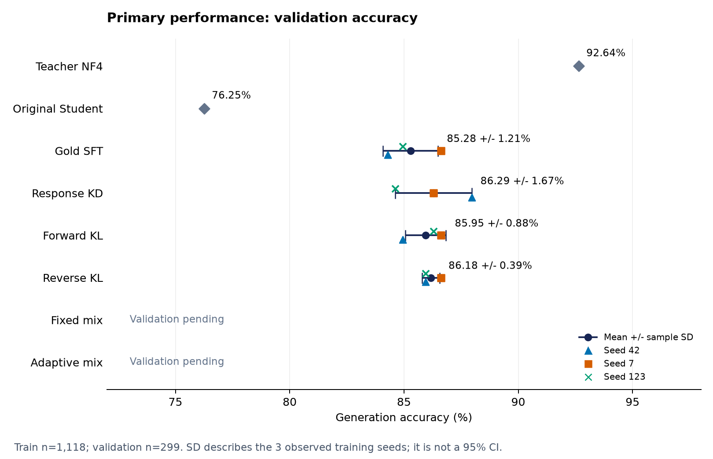
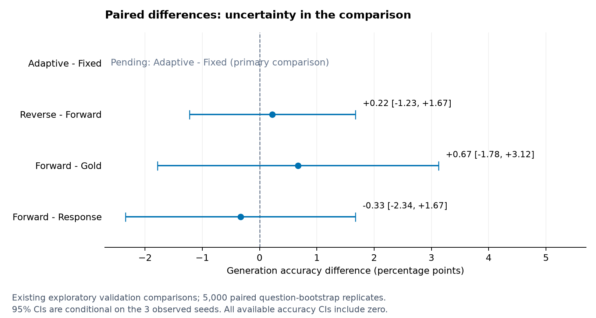
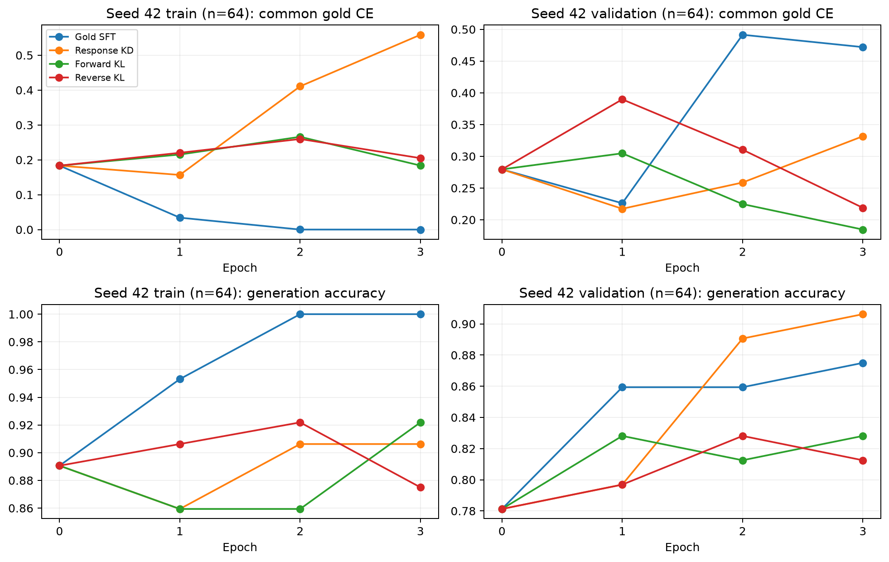
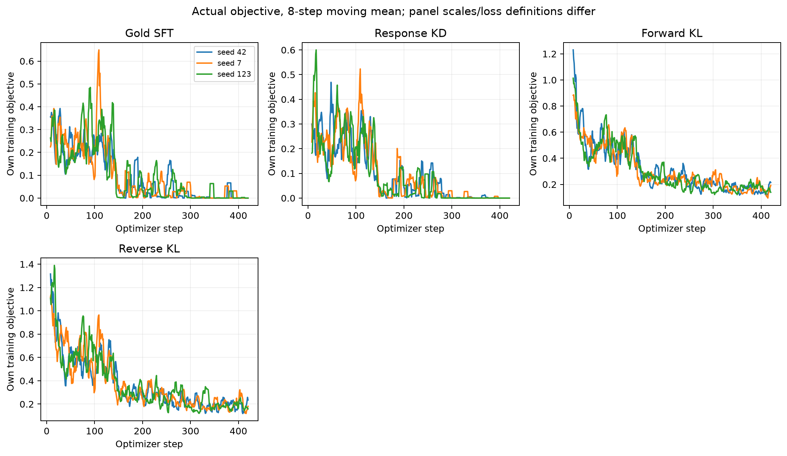
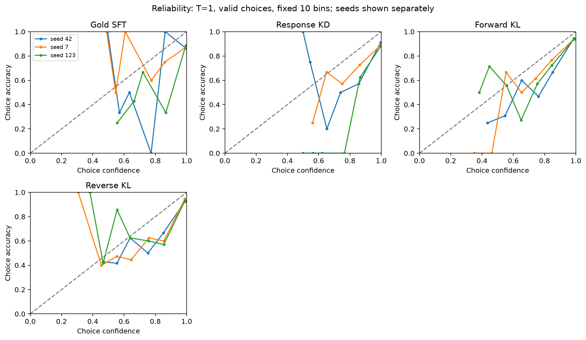

Full-train experiment: interim validation
Training 13/18 complete; validation 12/18 verified. Four of six conditions have three-seed validation results (n=299). Adaptive-minus-Fixed remains pending. Training is stopped by user; test has not been evaluated.
Report order: generation accuracy → paired accuracy differences → training and mechanism diagnostics → supplementary probability quality and costs. Reporting was clarified after inspecting interim validation; the frozen primary comparison, computations and original results are unchanged.
Research report · Evaluation plan · Unchanged source statistics · Reporting review record
Primary performance: accuracy and observed seed variability
Bars are sample SD across the three training seeds, not confidence intervals. Teacher and original Student are single reference evaluations.

Paired accuracy differences: comparison uncertainty
The primary Adaptive-minus-Fixed comparison is pending. Shown comparisons are exploratory; question-bootstrap 95% CIs are conditional on the observed seeds.

Training diagnostics: common Gold CE and accuracy
Seed 42; fixed train/validation subsets of 64 each. Train diagnostic questions are part of the training data.

Training objective curves
Loss magnitudes for different objectives are not directly comparable.

Gate and clipping diagnostics
No adaptive model has been trained. Entropy-gate values from pure Forward/Reverse are counterfactual diagnostics, not actual adaptive branch fractions.

Teacher error patterns
Validation teacher errors n=22; originally correct Student subset n=7. Descriptive, not causal evidence.

Supplementary: original Accuracy and choice NLL intervals
Original combined figure retained. Its bars are paired question-bootstrap CIs, unlike the seed SD bars in the primary accuracy figure.

Supplementary: Brier, choice ECE and reliability
T=1 probability normalized over valid choices; choice-token correctness may differ from parsed generation accuracy.

Supplementary: runtime and memory
Same student size and LoRA setup; these are execution diagnostics.